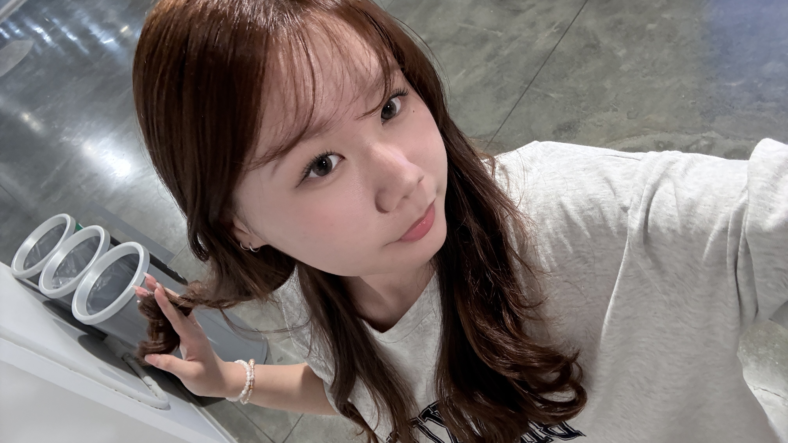

01 / ABOUT ME
你好，我是
目前就讀長庚大學人工智慧學系，喜歡探索科技、設計與生活之間的各種可能。

02 / INTERESTS
在陌生街道、展覽與咖啡館裡，收集有趣的故事。
用鏡頭和筆記，記下那些值得被好好感受的片刻。
持續研究讓數位體驗更直覺、更有溫度的方法。
03 / SELECTED WORK
每個專案都是一次理解、整理與創造的練習。
品牌識別／2025
數位產品／2024
編輯設計／2024
04 / CONTACT